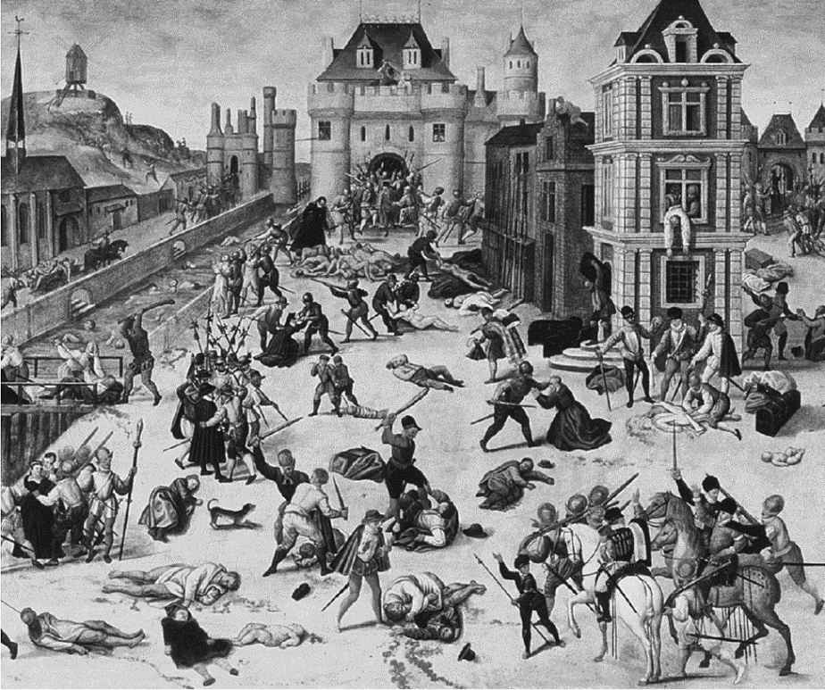

《奥格斯堡和约》为各种异端学说的涌入敞开了大门。奥格斯堡教区承认路德教是天主教信仰以外唯一可以选择的信仰。但是，新教教会完全有理由使自己的新教派在欧洲大陆扩散。路德的个人解读《圣经》的基本学说必然导致对《圣经》的不同解释，从而产生各种新教派。例如，在瑞士，约翰·加尔文同路德一样反对通过“善行”获得拯救的教义，但也反对路德的通过“信仰”获得拯救的说法。加尔文宣扬宿命论——每个人的命运在他出生前就由上帝决定了。“因此，根据《圣经》的明确教义，我们断言，通过永恒、不变的意图，上帝始终决定着谁可以被拯救，谁将被毁灭。”加尔文与路德的不同之处还在于，他主张教会应积极干预社会事务，以保证消灭各种异端学说、亵渎神明的言行和邪恶行为。他在日内瓦主事时期（1541—1564年），他的长老院将这座城市改造成了一个基督教社区，它的严肃和神圣使游客感到震惊。而且，印刷品的效力使得加尔文把日内瓦变成了改变宗教信仰运动的总部，并极大地影响了波希米亚、匈牙利、荷兰、苏格兰、英格兰等国和在海外的美洲13个殖民地。
新教中一支完全不同的教派是再洗礼派，它的宗教的和社会的激进主义使其遭受了天主教、路德教派以及加尔文教派的迫害。依据路德的每个人都应遵循自己的意识的理论，再洗礼会教徒要求完全的宗教自由，包括政教分离。同样激进的是他们的社会学说——他们反对个人积累物质财富、反对阶级和地位差别、反对服兵役和反对因发动战争而需交纳的税收。这些信条损害到了整个宗教和政治组织的权威，因此，再洗礼教徒在整个欧洲受到迫害和遭到大规模屠杀也就不足为怪了。胡特尔派和门诺派是他们中的幸存者，他们想尽一切办法才得以维持到今天。
决定一国宗教最重要的因素几乎总是它的国王的决定。假如他支持与罗马分裂，宗教改革就会取得胜利；如果他反对分裂，宗教改革就会失败。有非常大的利益等着国王选择支持新教教会。如果他成为全国教会的首脑，而不是接受教皇封赐的权力，他的政治权力就会增加。他的经济地位也会提高，因为他可以没收教会的土地和动产，还可以制止流向罗马的税收。尽管反对教皇有这些好处，但保持忠诚的国王和与教皇分裂的一样多。一个原因是担心遭受由教皇支持的查理五世的帝国军队的攻击。另外，很多国王发现，如果他们保持天主教身份，可以从教皇那里得到与成为新教徒国王可能得到的差不多的政治和经济特许权。因此，在路德死后，欧洲的宗教地图是各种教派大混合的局面。
这一宗教的版图最终显示，几乎有一半的德意志邦国信仰了路德教派，此外还有波罗的海的日耳曼语地区、丹麦——挪威和瑞典——芬兰的斯堪的纳维亚王国。在英国，亨利八世仍是一个信奉天主教义的好教徒，他和英吉利海峡对岸的法国国王一样，控制着天主教的牧师。但是，亨利最终还是建立了独立的英国教会（1534年），因为他决定与来自阿拉贡的妻子凯瑟琳离婚。教皇没有答应他的请求，因为凯瑟琳是皇帝查理五世的姨妈，而查理的军队在几年前刚洗劫了罗马。因此，亨利成为新英国国教的首脑，为了确保贵族的支持，他将没收的教会土地分给了他们。但是，在他在位时期，新教会仍然坚定地维持天主教的教义和仪式，仅有的改革是把《圣经》翻译成英文。亨利的继任者则根据他们个人的爱好进行了改革——爱德华六世（1547—1553年）转向了新教，玛丽（1553—1558年）又回到天主教，伊丽莎白（1558—1603年）则选定温和的新教。
在荷兰（包括现在的荷兰和比利时），宗教争端和政治争端结合在一起导致了长年的战争。荷兰北部诸省的多数人都成为了加尔文教派的信徒，这与虔诚的天主教教徒西班牙国王腓力二世发生了冲突。政治上的差异也包括在这一冲突中，荷兰人反对腓力二世干涉他们所认为的国内事务，还对他征收的重税和限制商业不满。1566年，荷兰人的抵抗爆发成为争取国家独立的第一次现代革命。当英国女王参与支持荷兰反叛者时，这场革命转而变成了国际战争。1588年，腓力二世做出反应，将由约130艘战船组成的“无敌舰队”向北派遣。但是，机动性更强的英国战船迫使无敌舰队向北绕过苏格兰，又向南回到了西班牙——回来的是一支被战败的、被摧毁的原远征队的残余。血腥的战争一直持续到1609年达成一项妥协办法后才告结束；该办法承认北部诸省以荷兰共和国的名义获得独立，而南部比利时诸省仍处在西班牙的统治下。

图138 《圣巴托洛缪惨案》由当时的新教徒画家弗朗索瓦·迪布瓦所作。在这一臭名昭著的事件中，巴黎有3000名新教徒被杀，整个法国估计还有2万人被杀。这场大屠杀使法国的宗教斗争从政治权力的争夺变成了一场新教徒和天主教徒之间的生死存亡的战争。
与此同时，加尔文派正在法国传播，在这里它的拥护者被称为胡格诺派教徒。这里的王朝不准备加入新教，因为弗朗索瓦一世通过《布罗格纳条约》（1516年）几乎完全控制了他所统治的地区的教会组织及其收入。他的继任者亨利二世（1547—1559年在位）残酷地迫害胡格诺派教徒。只要拥有一本《圣经》就足以被指控为异教徒。亨利的死给了胡格诺派教徒一个机会，因为不论是太后凯瑟琳，还是她软弱的儿子，都没能像伊丽莎白在英国那样得到大众的支持。尽管凯瑟琳试图找到和解办法，但整个国家却分化成对立的两大派：不断发展壮大的胡格诺派和人口占大多数的天主教派。随之而来的宗教战争在圣巴托洛缪惨案（1572年8月24日）中达到顶峰，当时全国成千上万的胡格诺派教徒被杀害。即使是这样的杀戮也不能使新教信仰屈服，斗争仍在继续；胡格诺派教徒得到了英国、荷兰和德国新教团体的支持，而天主教派教徒则得到了西班牙国王腓力二世给予的人力和资金上的援助。直到1598年亨利四世颁布保障胡格诺派教徒心灵自由的《南特敕令》时，和平才得以恢复。在一个国家内给予两种宗教以法律承认和合法地位，这种解决方法是欧洲宗教历史的一个转折点，可与允许一个国王在两种宗教之间做出选择的《奥格斯堡和约》相媲美。